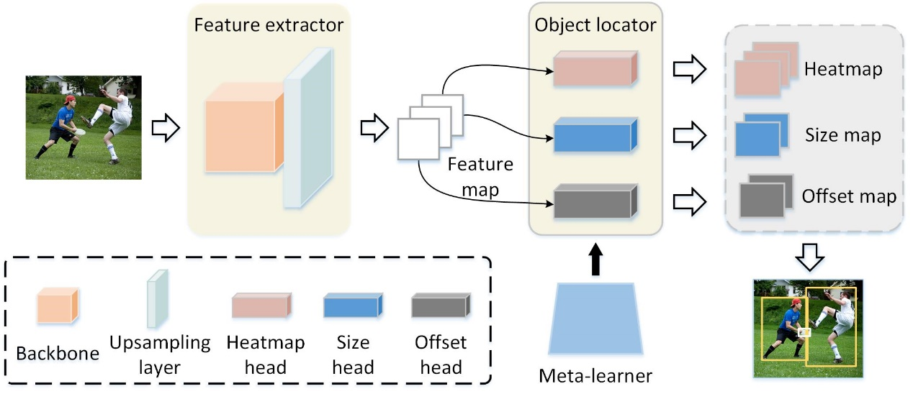
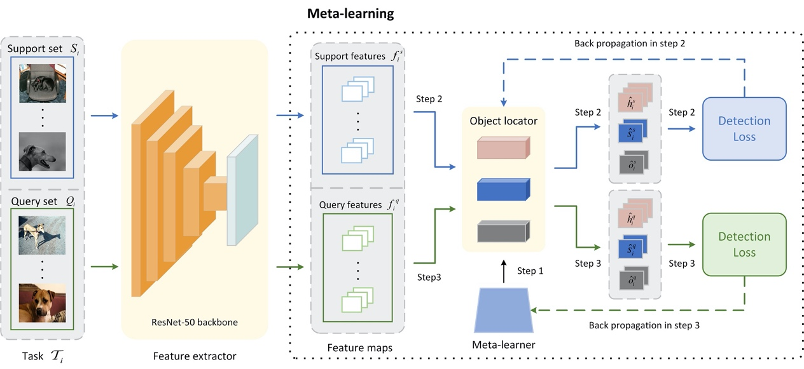
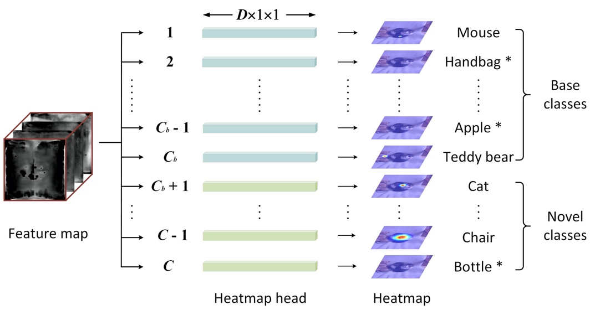
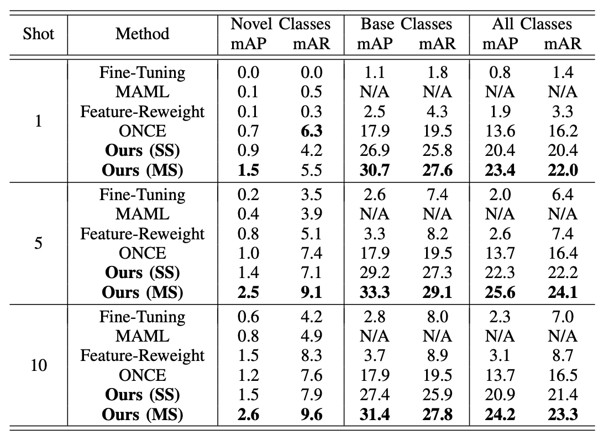
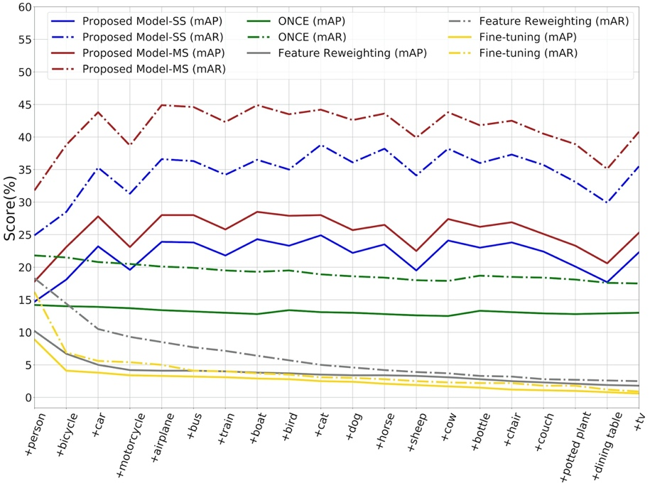
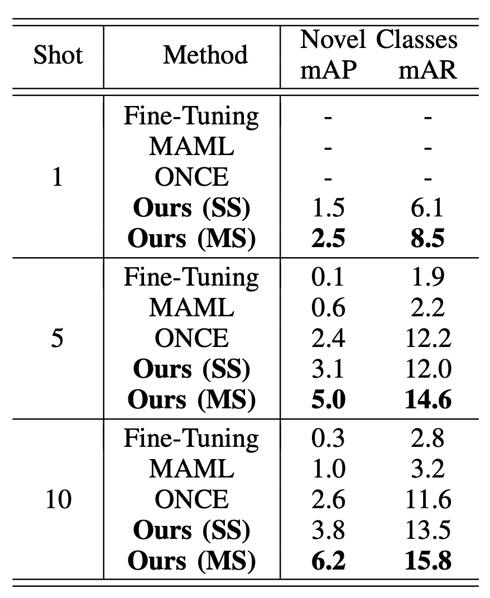
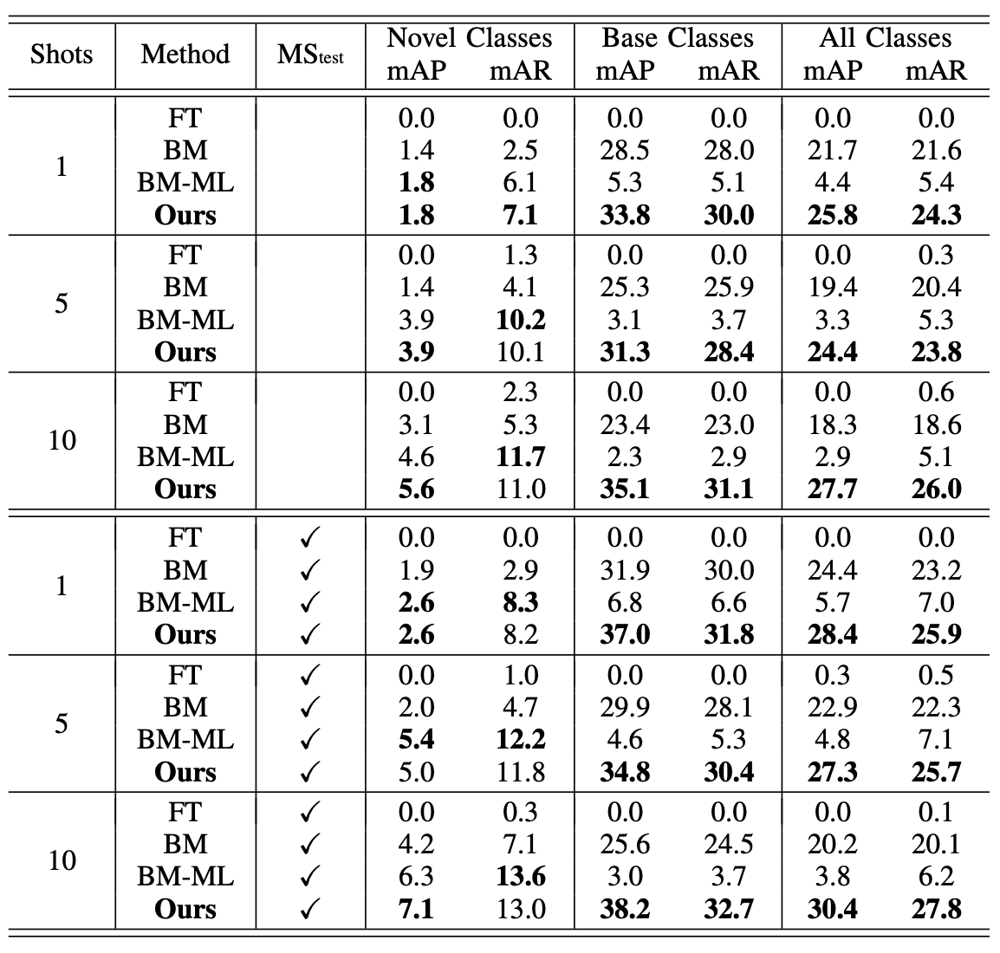

Meta-Learning Based Incremental Few-Shot Object Detection
Meng Cheng, Hanli Wang and Yu Long
Overview:
Recent years have witnessed meaningful progress in the task of few-shot object detection. However, most of the existing models are not capable of incremental learning with a few samples, i.e., the detector can't detect novel-class objects by using only a few samples of novel classes (without revisiting the original training samples) while maintaining the performances on base classes. This is largely because of catastrophic forgetting, which is a general phenomenon in few-shot learning that the incorporation of the unseen information (e.g., novel-class objects) will lead to a serious loss of the knowledge learnt before (e.g., base-class objects). In this work, a new model is proposed for incremental few-shot object detection (iFSOD), which takes CenterNet as the fundamental framework and redesigns it by introducing a novel meta-learning method to make the model to adapt to unseen knowledge while overcoming forgetting to a great extent. Specifically, a meta-learner is trained with the base-class samples, providing the object locator of the proposed model with a good weight initialization, and thus the proposed model can be fine-tuned easily with few novel-class samples. On the other hand, the filters correlated to base classes are preserved when fine-tuning the proposed model with the few samples of novel classes, which is a simple but effective solution to mitigate the problem of forgetting. The experiments on the benchmark MS COCO and PASCAL VOC datasets demonstrate that the proposed model outperforms the state-of-the-art methods by a large margin in the detection performances on base classes and all classes while achieving best performances when detecting novel-class objects in most cases.
Method:
The main framework of the proposed model is illustrated in Fig. 1. The feature extractor trained with the abundant base-class samples is supposed to be generic enough to extract the features of any images, including the images of novel classes. After training the feature extractor with sufficient base-class samples, the parameters of the feature extractor will not be changed in subsequent steps. Furthermore, in the setting of iFSOD, the detection model is expected to detect novel-class objects by visiting only the few novel-class samples without relearning basic knowledge. To achieve this, a meta-learner that determines the parameters of the object locater is introduced to equip the model for adapting to the few novel-class samples incrementally. The meta-learner is optimized via a meta-learning algorithm benefited from the MAML algorithm. Therefore, the main training procedure of the proposed model consists of two stages: the base training stage and the meta-learning stage.

Fig. 1 Overview of the proposed model for incremental few-shot object detection.
(1) Base Training: At the base training stage, the goal is to get a robust feature extractor given abundant base-class samples. This process is nearly consistent with the training process of the fundamental framework. The only difference is that the samples provided to the proposed model only contain the annotations about the base classes, while the annotations of the novel classes are removed.
(2) Meta-learning: At the meta-learning stage, as shown in Fig. 2, the parameters of the feature extractor are frozen and a meta-learner is introduced, which is trained with the proposed meta-learning strategy, to enable the model for adapting to the few novel-class samples. Note that the structure of the meta-learner is identical to that of the object locator obtained after the base training stage, and the parameters of the meta-learner are initialized in the same manner as the object locator.

Fig. 2. Illustration of the proposed meta-learning procedure.
(3) Few-shot Fine-Tuning: When the few novel-class samples appear, all we need is to employ them without any base-class samples to fine-tune the model. Note that the parameters of the feature extractor and the filters about the base classes in the heatmap head are not optimized in this phase as shown in Fig. 3, which is a key design that assists the model to surmount the problem of catastrophic forgetting. As a result, the proposed model is able to detect novel-class objects and keeps its performance on the base classes.

Fig. 3. Illustration of the heatmap head in the object locator.
Results:
The proposed model is compared to Fine-Tuning, Feature-Reweight and the state-of-the-art ONCE, all of which are reported in the study of ONCE. Note that the Feature-Reweight method is originally for non-incremental few-shot object detection and it has been adapted to the iFSOD setting. Besides, MAML is not designed for iFSOD and thus its performances on base classes are not given. For a fair comparison, the backbone of the proposed model is ResNet-50, which is consistent with other competitors. The comparison results on the MS COCO validation set for base classes, novel classes and all classes considering K = 1, 5 and 10 shots per class are shown in Table I. The evaluation metrics are mean average precision (mAP) and mean average recall (mAR), both of which use 10 intersection of union (IoU) thresholds from 0.50 to 0.95 with a step size of 0.05. The proposed model is tested on both the settings of the single scale (denoted as SS) and multiple scales (0.5, 0.75, 1.0, 1.25 and 1.5, denoted as MS). Note that other baseline models are tested with multiple scales.
Table I
Comparison of incremental few-shot object detection performances on the MS COCO dataset.

The performances on all classes considering the setting of continuous incremental learning are shown in Fig. 4.

Fig. 4. Comparison of continuous incremental learning performances of the proposed model and other competitors.
The performances of the proposed model evaluated in a cross-dataset setting are shown in Table II.
Table II
Comparison of incremental few-shot object detection transfer performances on the PASCAL VOC validation set with the base-class training data from the MS COCO training set.

The ablation study of the proposed model includes the following three aspects: (1) fine-tunes the model directly without introducing the meta-learner and updates the parameters of the feature extractor together with the object locator, which is denoted as FT; (2) fine-tunes the model without introducing the meta-learner but fixes the parameters of the feature extractor, which is denoted as BM; and (3) fine-tunes the model with the meta-learner but without applying the proposed strategy for overcoming the problem of catastrophic forgetting, which is denoted as BM-ML. All these models are tested on both the single scale and multiple scales, and the results are shown in Table III.
Table III
Ablation study of the meta-learner and relevant strategies on the MS COCO validation set.

Source Code:
Original illustration: image placeholderML-iFSODv1.0.zip
Citation:
Please cite the following paper if you find this work useful:
Meng Cheng, Hanli Wang, Yu Long. Meta-Learning Based Incremental Few-Shot Object Detection, IEEE Transactions on Circuits and Systems for Video Technology, vol. 32, no. 4, pp. 2158-2169, Apr. 2022.